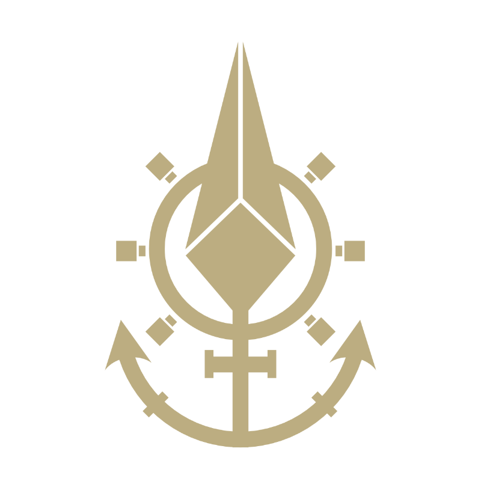
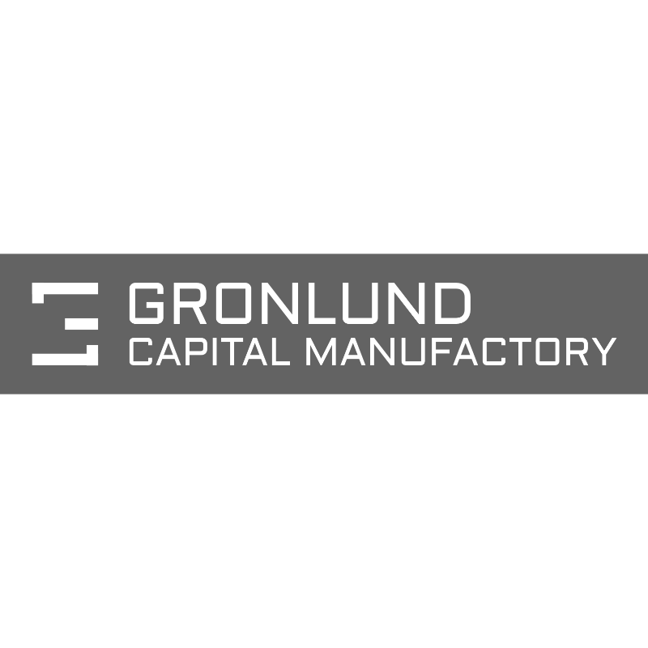
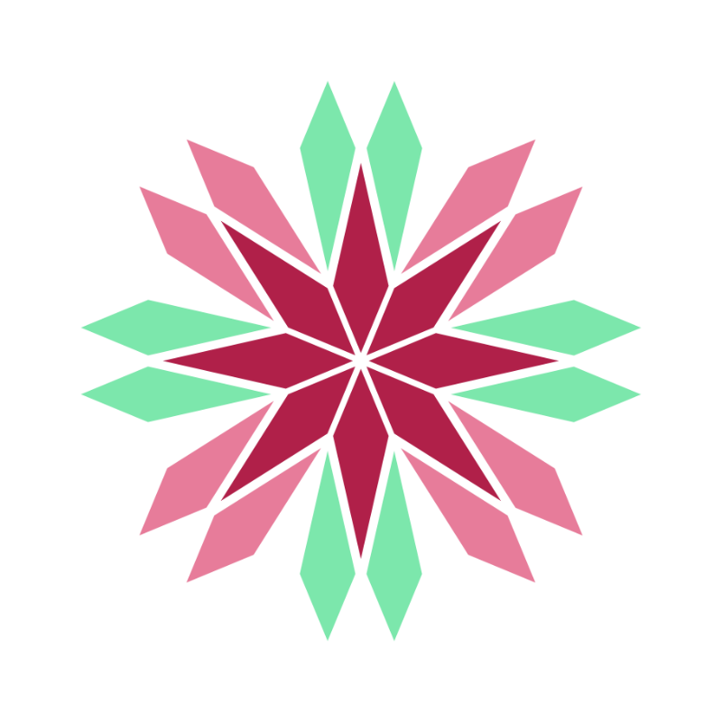
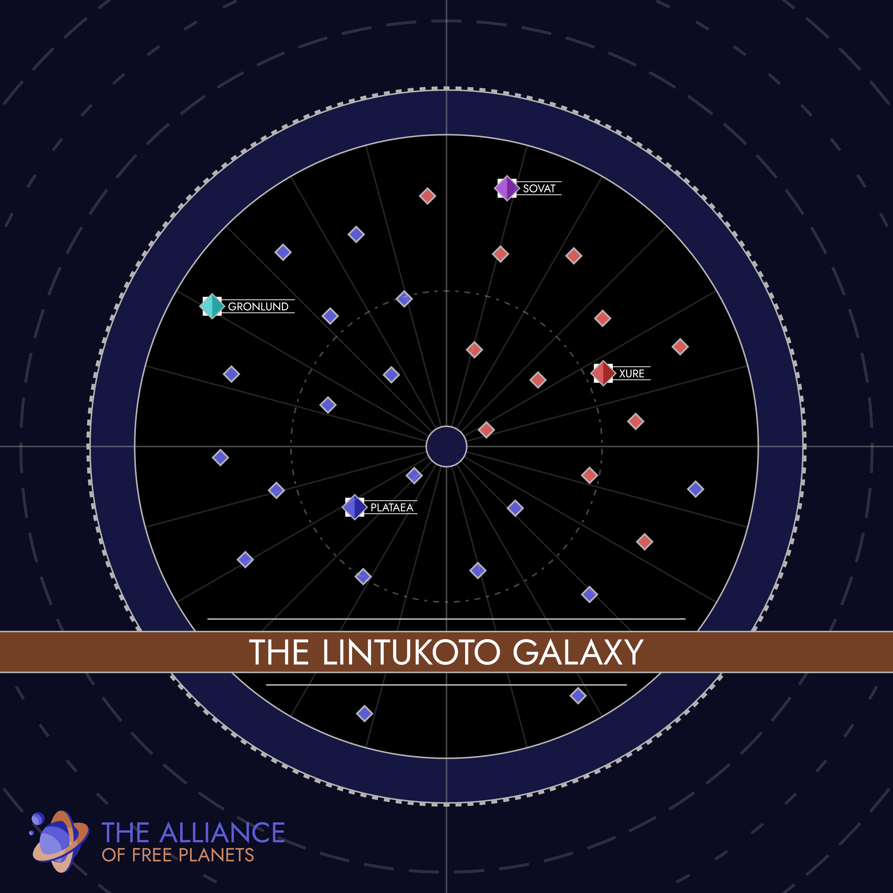
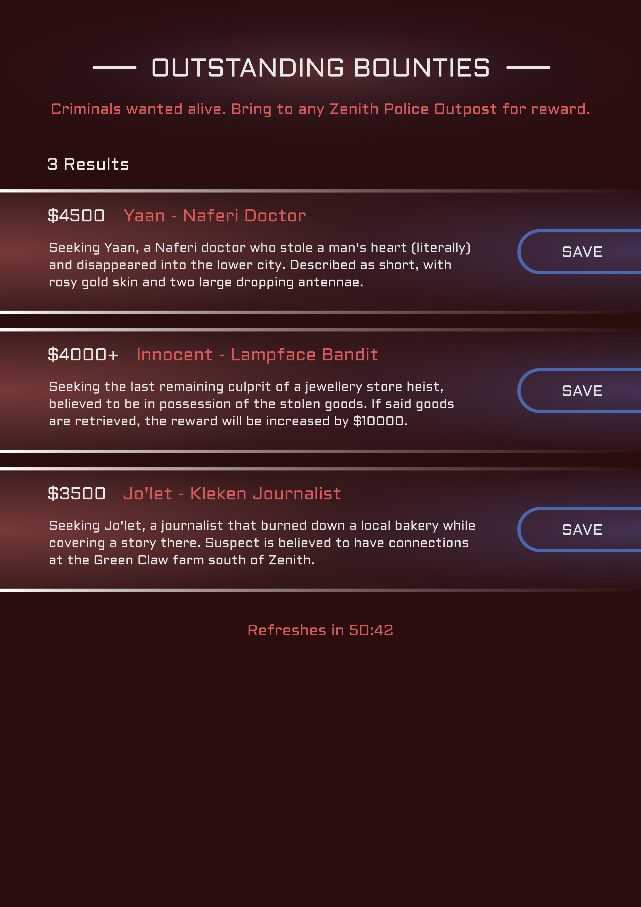
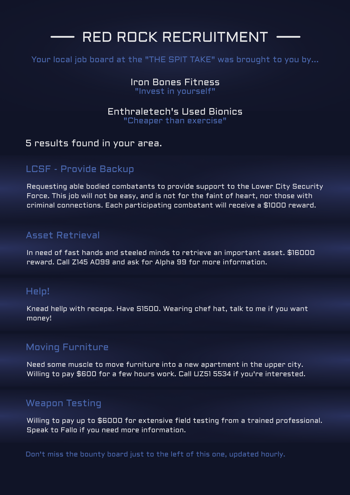
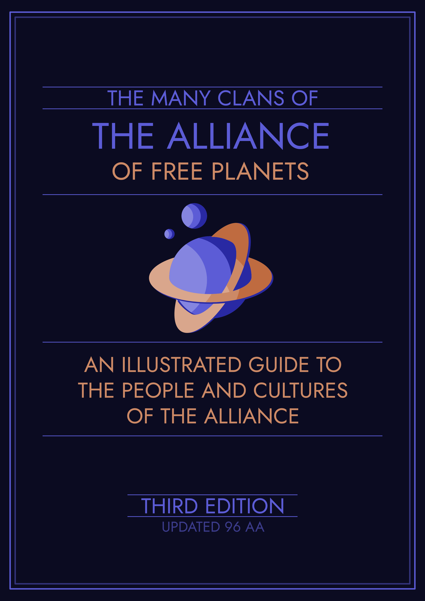
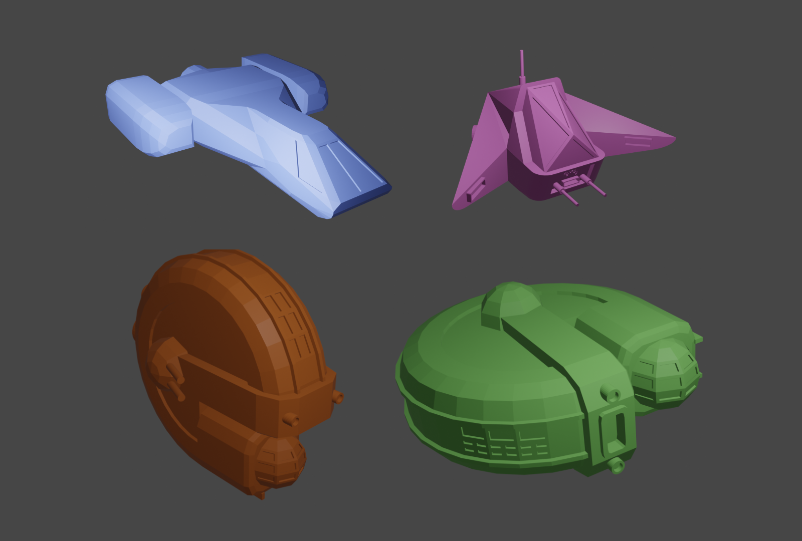

LOGOS
FACTIONS
There are countless factions at play in this campaign's setting, and so only a select few were given logos to help give the players a better idea of their identity. The second paragraph beside each details the design philosophy involved in its creation if you'd rather skip over any flavour text.
THE ALLIANCE OF FREE PLANETS
The Alliance of Free Planets has undeniably become the most prevalent civilisation in the Lintukoto galaxy, and despite unending war, most under its rule live safe and comfortable lives.
In the campaign's world, the Alliance's logo is a representation of the planet Zaa, the place of its founding. From our outside perspective, the ringed planet is an iconic sci-fi staple, and in this case the rounded shapes and bright colours helps to give the faction's logo an inviting vibe. It's a simple symbol with an identifiable silhouette that can easily be further simplified if need be. The colours here are used regularly across material that's associated with the faction (including this page itself), and so complimentary blues and oranges were an easy and versatile choice for that purpose.
THE XURE REPUBLIC
The mortal enemy of the Alliance of Free Planets, the Xure Republic are a warlike people to whom luxury is a foreign concept. A vast majority of the Xuran population are Xurex, tree-like beings biologically modified into two castes - warriors and engineers, each created to be near perfect at their trade. Despite their civilisation's general distaste towards the peaceful way of life seen across the Alliance, many Xurans find relief in artistic pursuits, resulting in many of the advanced ships and structures their people have become known for.
The symbol of the Xuran people is a bilaterally symmetrical geometric flower, reflecting both their plantlike origins and the strict patterns used to create each individual in their society, coloured a deep red to help convey to the players the danger that this faction can pose.
THE SOVAT TECHNOCRACY
Contrary to the name, it's commonly known fact that the Sovat Technocracy is a theological autocracy operating under an artificial overlord of their own creation - the great Sovat, a mechanical being said to contain the spirit of their deity. Little is known about life in the technocracy ever since it was sealed off to the outside world 60 years prior to the beginning of the campaign.
Where the Alliance uses rounded shapes to create a welcoming feel, the Sovat Technocracy's logo turns that on its head, most of its round edges ending in sharp points, its dark colours invoking an air of mystery and unease. The concentric circles reflect the beliefs of the faction, that all centres on their mechanical deity, while the sharp and uninviting points quickly and clearly convey to players that members of this faction are not going to be friendly, nor are they to be taken lightly.
SHIP MANUFACTURERS
As spaceships and their construction played a core part in the campaign, each of the galaxy's ship manufacturers was given a logo to help the players keep track of each one, along with the factions most often associated with them. Below are all of these logos, each accompanied by a short overview. The second paragraph beside each logo goes into the design philosophy behind its creation if you'd rather skip over any flavour text.
TEUTA MECHWORKS

A pirate owned business, Teuta ships are a rarity in civilised space, yet their low maintenance and high offensive potential make their wares a well sought after commodity for mercenaries, no matter the side of the law they call home. Most Teuta ships are smaller than their competitors, with a select few even designed to operate with only a single pilot, but what they lack in hull they more than make up for in firepower.
Teuta Mechworks' simple logo is made up of three core pieces - the spear emphasising the company's focus on firepower, the anchor and helm representing their close ties to the galaxy's pirates, and the "T" in the spear's handle a not so subtle reminder of their name. These aspects alone are enough to help players quickly identify the company in the wild, as well as the dangers those that use their products might pose.
RM SHIPWORKS
Thousands of years in the future, the understanding of our modern human culture is vague, limited and often misinterpreted. To honour humanity, the only alien race to come to Lintukoto from another galaxy, the Alliance of Free Planets named Real Madrid Shipworks after the 21st century's most famous army. Their ships and parts are generally middle of the road - unremarkable, yet reliable - and make up a vast majority of the Alliance's naval fleet.
Playing on the idea that the Alliance has a misguided reverence towards ancient humanity, this company uses a logo heavily inspired by the Real Madrid football team's own, replacing its "FC" with "SW" for "Shipworks", and takes the same orange colouring as the Alliance's logo to easily show players that they act as the faction's primary supplier of ships and ship parts.
BEETLE
Appreciating the similarities of the insect life on the planets they did trade with early in life, the creator of the Beetle branded starships built the first few as a hobby. At first, they were ridiculed for the relative lack of standard combat features compared to their competitors, but over time the company's focus on comfort and safety grew on the galaxy's wealthy few.
The beetle's simple round shell is intended to be a symbol of structure and stability, and the ships and parts they sell reflect that.
GRONLUND CAPITAL MANUFACTORY

When the Gronlund Principality seceded from the Alliance of Free Planets, they also gave up the wealth of knowledge and expertise the civilised galaxy had to offer. The Gronlund Capital Manufactory is their attempt to mitigate that loss, though with so few skilled mechanics, their only strength is the vast amount of supplies at their disposal. The resulting parts aren't particularly effective, but they're certainly cheap.
Where the other manufacturers' logos are designed to be reminiscent of real world car brands, Gronlund's logo is simple, a plain grey rectangle with a monogram beside the company's full name. The goal of this logo is to convey to players that the Gronlund Manufactory was not made to sell ships to a galactic market, and thus is entirely function over form. The ships are most often associated with the Gronlund Principality, with a quantity over quality approach to warfare.
THE XUREX GREENHOUSES

Unlike the galaxy's other manufacturers, Xuran ships are produced in what they call "greenhouses". A fitting name, given their ships are mostly biological, but given these greenhouses produce necessary mechanical parts as well, it wouldn't be unfair to compare them to factories elsewhere. Xuran ships are among the most formidable in the galaxy, capable of learning and adapting over time to the point where even a new crew could have no trouble fending off foes with decades of experience and an inferior vessel.
The logo of the Xurex Greenhouses is an extension of the Xuran faction's own, seen in the "factions" section above. Like many other branches of their military, the logo takes the floral structure of its base design, only changing the colours of the petals depending on the branch involved. Given the similarity in design inherent to this philosophy, confusion would be unavoidable if players were forced to interact with too many of its iterations. Thankfully this and the base design are the only ones in common use outside of Xuran space.
MAPS, DOCUMENTS AND MISC
THE LINTUKOTO GALAXY

Above is the map of the galaxy players were given when navigating the Lintukoto galaxy. Each diamond represents an important solar system, with the colour representing the faction in control of said system. Plenty of other solar systems exist between those shown, but were not directly relevant to the game's story or world. The diamonds with more decoration highlight each faction's home system, while the empty space at the galaxy's centre is the Aimless Expanse, a system whose star interferes with traditional communication and scanning technology, making it an ideal home for those living outside the law.
ZENITH CITY

The most populous city in the Aimless Expanse, Zenith city is the first city the players visit in this campaign, with nothing but a map and a few leads. This map of Zenith is intentionally light on details, instead focusing on districts at large. Ideally, this would split the city into smaller sections that are easier for the players to distinguish from each other, rather than making the city a conglomeration of those small yet vital pieces of world building.
JOBS AND BOUNTIES


While exploring Zenith, the players find themselves in need of work - or more accurately, in need of enough money to build a starship and return to the more civilised parts of the galaxy. These simple boards were made with swapping their contents out regularly in mind, so that the players were always aware of their options.
THE PRISON SHIP

At the very beginning of the game, the players found themselves on a Sovat Technocracy prison ship, an advanced vessel that they're only able to escape with outside help. Once they reach the bridge, they find this map and are contacted by a group of pirates that want their help to disable the ship so it can be brought back for study. The map tells them where they need to go to disable the ship's engines, where their confiscated equipment is being held, and where the airlock they'll need to use to finally escape is.
THE GUIDE TO ALLIANCE CULTURE

In-world, the Guide to Alliance Culture is a document created by the Alliance of Free Planets, detailing the intelligent alien races that make up the galaxy's clans. It provides insight into the Alliance's identity and position in the galaxy - as much as they'd like to say they're winning the war, their need to separate the clans of the galaxy into classes betrays the anxiety and deception that lies just below the surface. For the campaign's players, the guide acts as a simple and easy visual guide to their options for character creation, but was paired with a much longer document detailing the rules and naming schemes for each race as well. View the entire document by clicking the image above.
3D MODELS

A selection of four miniature ships were created to be 3D printed and used in tabletop ship to ship combat. For simplicity's sake, only 1 of each medium sized ship was printed, while 4 of the small sized ships were printed. Unique bases were also created that slotted into each ship with arrows dictating their facing when used in game.
RETURN TO MAIN PAGE
Daniel Mooney's Portfolio, last updated October 2026
Contact at danielpaulmooney@gmail.com